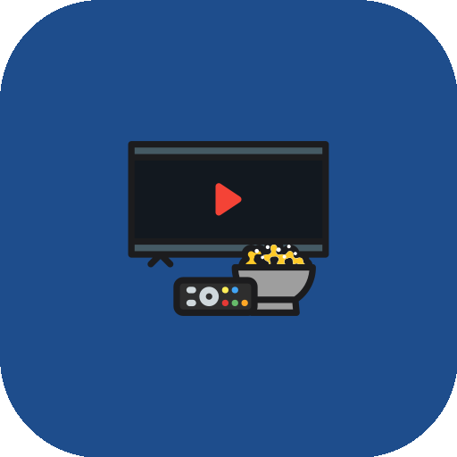
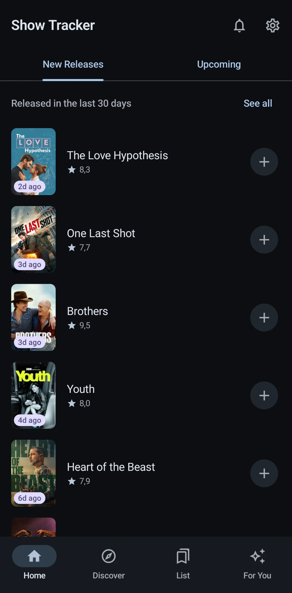
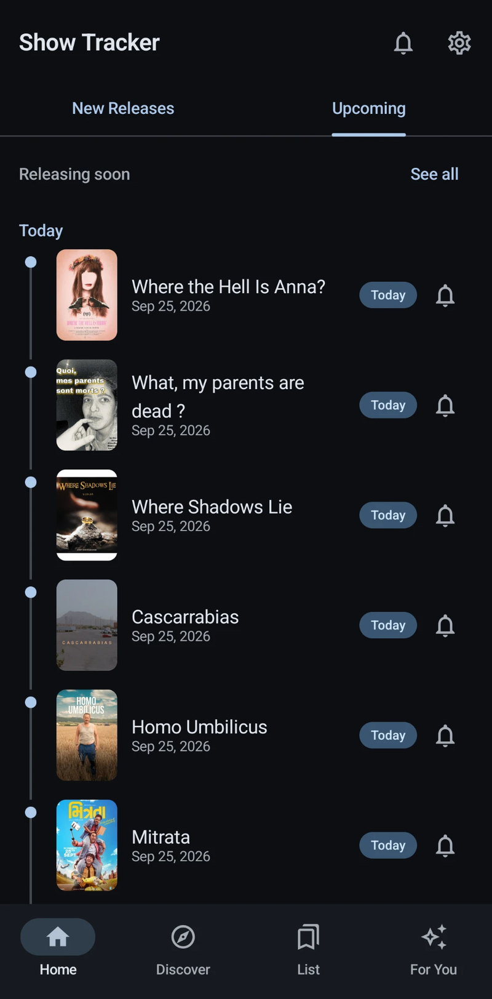
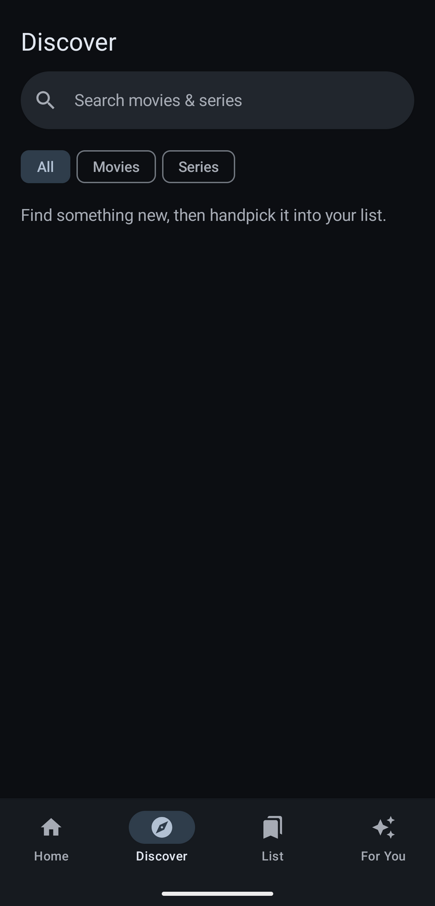
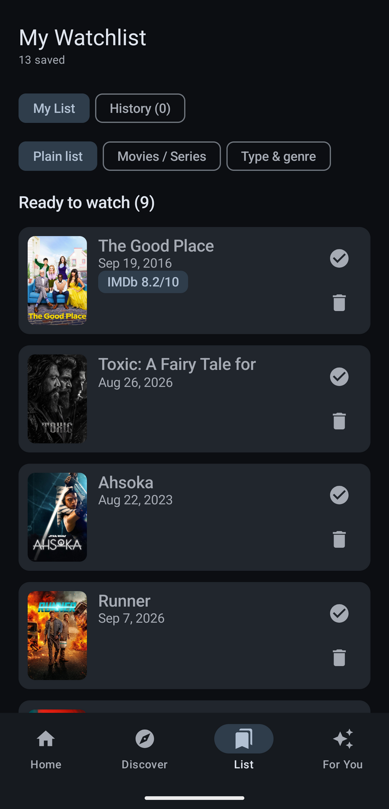
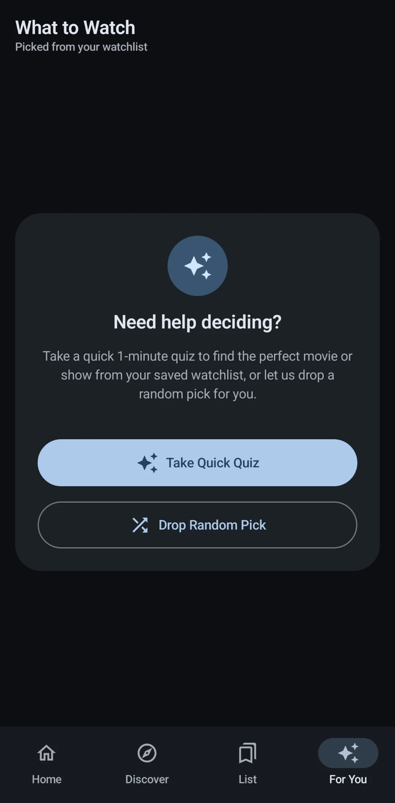

Show Tracker
One list for movies and series: what's releasing soon, what just dropped, alerts on release day and when a new season is dated, and a quick picker for when I can't decide.

Why it exists
The idea is simple: I wanted one overview of what's coming and what just landed, a way to set a reminder for a specific title instead of hoping I'd remember it, and a search that lets me add anything, movie or series, to a single watchlist. Series needed one more thing: a heads-up when a show I follow gets its next season, not only when it first premiered. From there, a quick picker takes the decision fatigue off my hands: give it a mood, a runtime window, a genre or two, and it draws from what's already on the list, or hands back a random pick.
Metadata comes from two APIs stitched together: TMDB for search, trending titles, synopses, cast, posters, trailers, recommendations, season schedules and region-aware "where to watch" data, and OMDb, queried by IMDb ID, for the IMDb rating and Rotten Tomatoes score TMDB doesn't carry itself. Neither IMDb nor Rotten Tomatoes exposes a public API of their own, so this pairing is the practical ceiling on what a hobby project can pull in without scraping.
From cloud builds to local builds
FitApp and Subscription Tracker both began in Python. Show Tracker skipped that step and went straight to native Kotlin and Jetpack Compose, since the toolchain from the Subscription Tracker rebuild was already familiar. It started fully in the cloud, with a GitHub Actions workflow building the APK on every push. After the move to Gradle 9.7 and Android Gradle Plugin 9.4, that workflow was retired: changes still arrive through pull requests on GitHub, and the APK is now built on my own machine.
Work on a branch
Every change is written on a feature branch, never straight on main.
Merge the PR
The branch lands on main through a pull request on GitHub.
Build locally
gradlew assembleDebug with Gradle 9.7.1, AGP 9.4.1 and JDK 17.
Install
The APK goes straight onto the phone. Release builds are signed with a local keystore.
What it does
New Releases and Upcoming
Home has two swipeable tabs: what came out in the last 30 days, with a one-tap add, and an upcoming timeline grouped into Today, This Week, Next Week and beyond, with a bell on each title. Pull down to refresh. "See all" opens full grids: Just Dropped with IMDb and Rotten Tomatoes scores and type and genre filters, and Releasing Soon split into the next two weeks, month, three months and later.
Discover and one watchlist
Discover opens on what's trending this week and searches movies and series together. Anything goes onto one list with a single tap, and every add or remove comes with an Undo.
A detail page worth opening
Backdrop, poster, runtime or season count, genres, IMDb, Rotten Tomatoes and TMDB scores, the trailer, cast, and where to watch in your region, split into stream, rent and buy. "More like this" leads to related titles, and share sends a link.
A list that sorts itself
The watchlist splits into Ready to watch, Waiting on release (undated titles included) and a History of what's been seen. It can be grouped by type, or by type and genre. Swipe left to remove, swipe right to mark as watched.
A quick picker for indecision
For You runs a short quiz (mood, movie or series, runtime, genres) and builds a stack of matches from the watchlist. "Drop Random Pick" skips the quiz. Swipe a card right to keep it or left to skip it, or tap it to open the details.
Release-day alerts
No local alarms. A WorkManager job re-checks TMDB roughly twice a day for every title with its bell on, and notifies the moment it's out. These checks bypass the HTTP cache, so a date change shows up the same day. The notification permission is asked for the first time a bell is tapped, not at launch.
New-season alerts
Series that are still running can be followed from their detail page. The same background job sends one alert when TMDB dates the next season, and one when it airs. The list shows a chip like "S3 · Mar 12", and the Notifications screen collects new seasons, fresh releases and what's coming up.
Genre, region and content filters
Preferred genres filter Home and Just Dropped. A region code decides which streaming services show under "where to watch", and per-country filters hide titles you'd rather not see, with exceptions. A lookahead setting controls how far ahead Releasing Soon reaches.
Where TMDB and OMDb fall short
Both APIs are rate-limited and occasionally miss a title, especially smaller or very recent releases. OMDb's ratings depend on TMDB having a matching IMDb ID, so some titles show ratings as unavailable rather than wrong. Season alerts are only as early as TMDB's data: big shows are usually dated weeks ahead, niche ones sometimes only days before, and dates follow the original network, not your streaming service.
Not wired in yet
The layout is phone-first: tablets and foldables get a wider grid, but no navigation rail or two-pane view. Discover doesn't remember recent searches, and "More like this" is TMDB's own list, so it ignores the genre and country filters.
Screens



